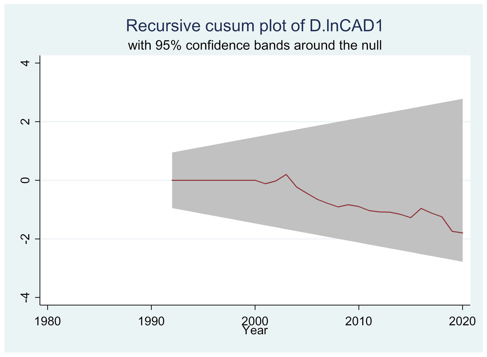
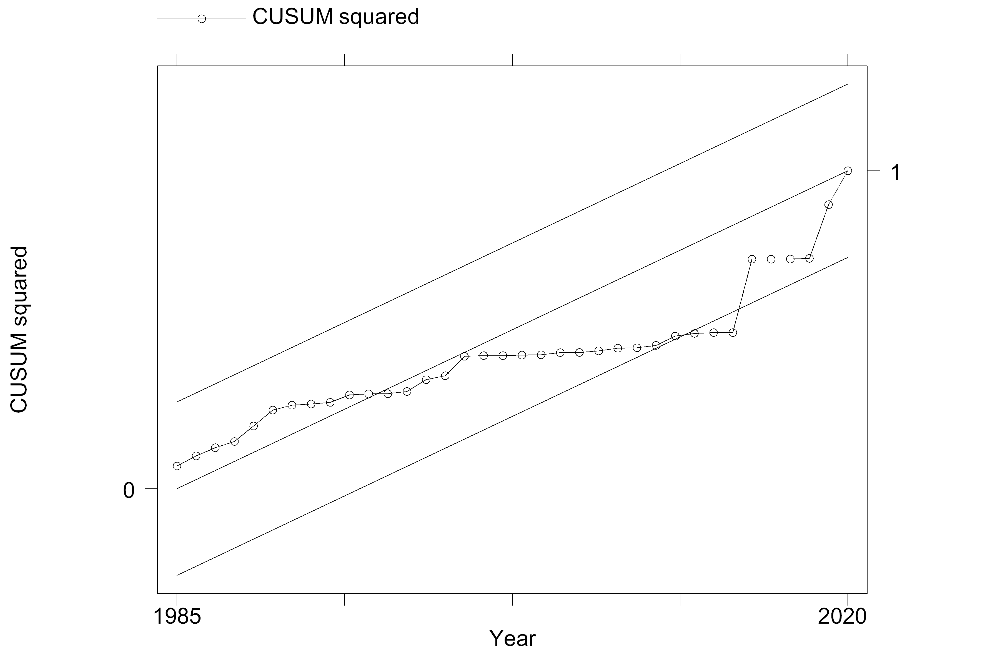
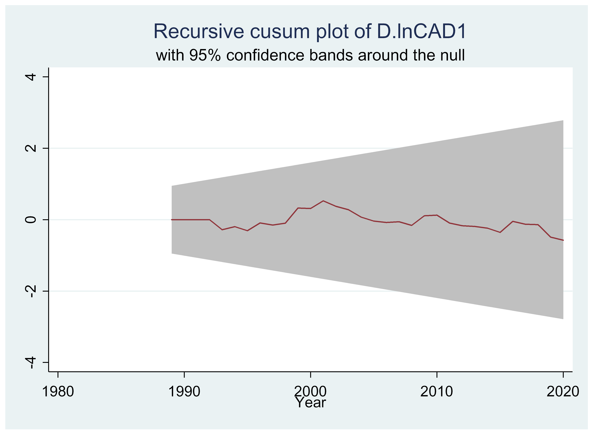
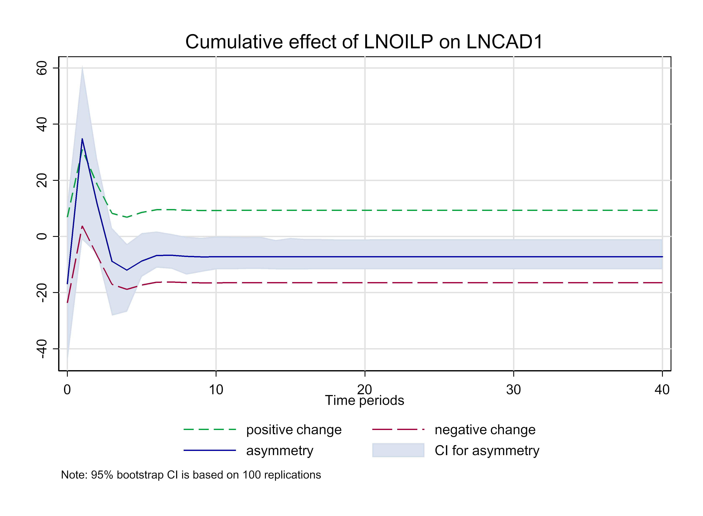

Variables | Acronyms | Measurement |
|---|---|---|
Current Account Balance (%GDP) | CAD | Billion US$ |
Oil Price (US$) | OILP | Brent oil price series |
Institutional Depth | INS | A Simple Average |
Trade Openness | Openness | Trade (% of GDP) |
Terms of Trade | TOT | ratio of export prices to import prices |
Foreign Direct Investment | FDI | Foreign direct investment, net inflows (% of GDP) |
Nominal Exchange Rate | NER | Official exchange rate (LCU per US$, period average) |
Source: CAD, Openness, TOT, FDI and NER - World Development Indicator (WDI) | ||
OILP - Federal Reserves of St. Louis at https://fred.stlouisfed.org/. | ||
INS - Worldwide Governance Indicators | ||

Oil Price Fluctuations and Current Account Deficits Mediating Roles of Institutional Quality in Nigeria: A nonlinear ARDL Approach
Working Paper
Abstract
The paper employs a NARDL to analyze the degree of asymmetry in the relationship between current account and oil price, with a mediating effect of the institutional role in Nigeria. The series employed in the study are obtained largely from the database of World Bank’s (WDI), and covers 1981 to 2021. In conclusions, we found that any form of shocks in oil price and nominal exchange rate exert significant impact on the country’s current account balances both in the short run and long run in Nigeria. In addition, poor institutional quality in the oil industry such as corruption, poor regulatory frameworks, hinders the country from fully optimizing the benefits associated with increasing global oil prices. Finally, a long run asymmetry is discovered in the nexus of current account-oil price with mediating role of institutions in Nigeria. Thus, we recommend that the PIA should be implemented carefully and strategically in an effort to remove all undue bottlenecks and bureaucracies to support Nigeria’s economic growth through attracting in and providing investment possibilities for both domestic and international investors, and thereby enhances the current account balance.
Keywords: NARDL, ARDL, Current Account balances, Oil price, Asymmetry,
Article Classification: F32, Q43, C32, P45
1 Background to the study
Oil revenue windfalls has been a large source of earnings in foreign currency for many oil exporting countries including Nigeria. Anecdotal evidence has revealed that the nearly $50 per barrel spike in oil prices between 2002 and 2010, led to astronomical increase in global supply of oil. For instance, data from a sample of exporting nations demonstrated that the worth of petroleum export revenues more than quadrupled to about $1500 billion in 2010, which, in actual terms, was significantly higher than the 1980 peak. As a result of this large rise in oil money, academics and economic policy makers are equally worried about how these oil producing countries divide their revenue windfalls. These oil exporting countries’ current account balances as well as the global trend of current account imbalances were significantly impacted by the distribution of revenue windfalls during this time of abnormally high oil exports (Helbling (2011); Arezki (2013)).
While this is ongoing, a number of academics have stressed how crucial a robust institutional foundation is to the operation of the oil and gas sector. According to Thurber (2011)’s analysis of the Norwegian Model of petroleum industry governance, the fragmentation of processes within an effective regulatory framework, has contributed to Norway’s oil and gas industry’s success. Hunter (2014) makes comparisons between Australia and Norway to further clarify how the regulatory structure works to make the most of the petroleum resources. According to Hunter’s research, Norway’s objective-based policies outperform Australia’s rule-based policies in terms of the performance of the petroleum sector.
Observing the trend in production in the countries that produce the oil is a useful approach to gauge the performance of the oil sector. According to Toft (2011) research, sociopolitical institutional structure does have an impact on the upstream industry’s investment climate, which has an effect on the production portfolio. The success of economic and natural resource management strategies that are selected and put into practice in order to extract economic value from the resource is determined by administrative structure and governance claim Barma (2012). In addition to controlling about 90% of the world’s petroleum reserves, the NOCs also act as a conduit for the administration of the state’s political and economic interests in the petroleum sector, making them a critical consideration when examining the regulatory capacity for the performance of the energy industry Boscheck (2007). A thorough investigation by Thurber et al. (2010) on how cronyism affects the operational efficacy of the Nigerian NOC-NNPC reveals that it has a substantial impact on the performance of various sectors. A number of literature accessible do show that the performance of the petroleum industry is indeed influenced by governance frameworks. The existing literature in this area can be distilled into two categories: those who examine and recognise the impact of institutional structure and control on the performance of the petroleum sector, as well as those that offer illustrations of institutional structure and regulatory framework. Thus, it is anticipated that a strong institutional foundation will increase the effect of oil prices on the current account.
Numerous studies have examined the relationship between price of oil and macroeconomic factors throughout petroleum countries, focusing either on how a crisis to the price of oil would affect national economy through the supply- and demand-side channel or how fluctuations in global economic activity would affect changes in the price of oil. Very few studies have been conducted to analyze the effects of oil price shocks on the external balances of oil-importing and oil-exporting nations with mediating roles of institutional framework, despite recent discussions suggesting that institutional framework have played a significant part in influencing the success of the petroleum and gas industry (Thurber (2011);Barma (2012)).
As against this backdrop, this research paper is put forth to examine the oil price-current account nexus in Nigeria with special attention on the role of institutions. It specifically attempts to achieve the following two objectives; to examine the effect of oil price fluctuation on the current account deficit in Nigeria, and to investigate the mediating role of institutional framework on the oil price-current account nexus in Nigeria. In order to assess how much the institutional framework affects this relationship, the research looks for the occurrence of nonlinearities. The remainder of the essay is structured as follows; section 2 provides a survey of pertinent literature. Section 3 provides a descriptive analysis of the data. Section four presents the empirical findings, and Section 5 brings the study to a close.
1.1 Stylized fact on oil price and current account
There are two major sub-sections that make up the section. The first sub-section discusses the dynamics of oil price fluctuation and selected macroeconomic between 1981 and 2020, and the other subsection analyses the trend and co-movement of the price of oil with selected key macroeconomic factors, which serve as background information for an investigation of the connection between the price of oil and Nigeria’s current account.
1.1.1 Oil Price Fluctuations
This segment projects the volatility in the global oil price between 1986 and 2020, according to Federal Reserves of St. Louis. In Figure 1, we demonstrate the trends of the oil price (Panel A) and its growth (log) in panel B. As shown by the linear trend fitted on the Panel A, the average global oil price between 1986 and 2021 is US$48.67 with peak of $US111.57 in 2012 and a trough of $US18.23 in 1986.
Figure I: Fluctuations in Global Oil (Brent) Price (US$)


2 Empirical Literature Review
Using panel smooth transition regression methods in 27 oil exporting nations between 1980 and 2010, Allegret (2014) found that price of oil fluctuations has considerable consequence on the balances of current accounts of these oil producing economies. However, the impact is heavily dependent on the economic development in terms of finance, which has a nonlinear impact on the transfer of changes in crude prices to current accounts. They found that while variations in prices of crude have a positive current account impact for oil exporting countries with financial development levels below 25%, they have a significantly negative impact and even reach zero for those countries with financial development levels above 25%.
In the so-called fragile-five nations between 1980 and 2014, Bayraktar (2016) discovered a nexus between prices of crude and GDP that is positive, and a association between prices of crude and the current account deficit that is negative. A long-term relationship between the current account deficit and oil prices was revealed by the co-integration tests, notwithstanding the fact that GDP and prices of crud did not have a long-term link. Lastly, they found that while there was a bidirectional causal relationship between GDP and oil prices, there was only a one-way causal relationship between oil prices and the current account deficit.
Gruber (2007) 61 nations were included in the study (1971-2003), mostly emerging nations in Asia and the US. They found that a regression model that included the typical current account determinants as reported in the research, like per capita income, output growth, fiscal balances, net foreign assets, economic openness, and demographic characteristics were unable to account for either the huge historic U.S. current account deficit or the considerable developing Asian surpluses.
&. H. Kilian L. (2013), a large group of economies, including major oil importers and exporters of oil (1970-2005). The outcome reveals that each of the three-oil supply and demand fluctuations that were taken into account had a different effect on the external balances. An oil supply disruption, for instance, often has a minor, statistically negligible impact on the oil trade balance, which is in line with how oil prices are expected to respond. On the other hand, an unanticipated rise in crude oil demand results in a continuous, substantial, and statistically significant imbalance in the trade of oil. Likewise, depending on the kind of shock, various current account components may respond differently in terms of timing, size, and even direction. The findings further highlight the significance for external balances of spikes in demand that is related to the global economic fluctuations and disruptions to supply and demand that are peculiar to the international market for crude-oil. For instance, in terms of fluctuations in NFA for oil exporters, these disruptions collectively account approximately 82percent of the fluctuation. Over half of the volatility is accounted for by demand and supply fluctuations specific to the oil market, with the remaining one-third being accounted for by demand shocks connected to the global economic fluctuations.
In Turkey between 1999 and 2008, Özlale (2010) employed a model of SVAR and found that the current account ratio responds to fluctuations in prices of crude by increasing gradually by the first three months before beginning to decline, which demonstrates that spikes to the price of petroleum have a substantial short-run effect. Additionally, the coefficient of the oil price variations is discovered to be nonpositive and statistically significant when the collected structural disruptions are applied in a conventional regression modelling.
Gnimassoun (2017) thoroughly researched Canada between 1960 and 2012 using a TVP-VAR model and discovered that while an oil supply spike has no impact on the current account, a crude demand spike does, and that impact is positive and significant, and it tends to increase over time. The paper also demonstrates how the tendency to spend oil money on imports has a major negative impact on the transmission of shocks to oil demand to the current account by analyzing the economic factors driving the development of this connection. Nonetheless, the development of the local financial industry and the building of foreign exchange reserves have significantly improved this relationship. The study supported this theory for Canada, where the surplus in the oil-trade balance has caused an upward trend in the current account’s elasticity of the price of oil over time. This demonstrates that an increase in oil prices will, regardless of its cause, result in a surplus in Canada’s current account.
According to Salisu (2017), asymmetric responses to variations in the prices of crude are shown in the stock values of both oil exporting and importing entities, however the latter group’s response is stronger than the formers. This was demonstrated in eight countries which are net oil exporters and five that are net oil importers. According to the predicted coefficients, stock prices are probably going to respond to variations in the price of crude similarly regardless of the category involved.
According to research by Saira Tufail et al. (2012), from 1981 to 2010, there were eight oil-producing countries (Iran, Nigeria, Egypt, Pakistan, Turkey, and Bangladesh), oil-importing countries (Bangladesh), and oil-transiting countries (Indonesia and Malaysia). With Bangladesh being the lone exception, all oil-importing nations’ current account balances improved when oil prices rose in the near term but deteriorated over time. On the flip side, all crude exporting economies see a deterioration of their current accounts due to the shock of the oil price, with the exception of Malaysia, whose current account actually improves over time. For Egypt, a 1% increase in prices of crude causes the country’s current account balance to decrease by 1.67% and its currency rate to rise by 0.6%.
Mahmet et al. (2014) used Johansen co-integration, causality tests, and the VAR approach to demonstrate the existence of a long-term relationship between two variables. An error correction model can be applied to address the short-term behaviors of the variables because there is a long-term relationship between the current account deficit and the global price of oil.
3 Theoretical Framework and Methodology
3.1 Theoretical Framework
The literature has explored the theory underlying the study of current account dynamics in great detail (see, Taylor (2002) . Yet it will be useful to quickly review some basic theoretical terms and notations. If the whole amount of goods produced and their potential allocation for household consumption (C), public expenditure (G), investments by firms (I), or exports (X) are considered to constitute the gross domestic product (GDP) Q, then;
\[ Q+M = C + I + G + X \tag{1} \] which becomes; \[ GDP = Q \equiv C + I + G + (X-M) \tag{2} \]
where \((X – M)\) represents net exports. Actually, SMS is made up of all the current account’s debit items, whereas SXS is made up of all the credit ones. Transposing Equation (2) so that \((X - M)\) is on the RHS to derive the current account balance (CAD);
\[ Q - (C + I + G) = (X - M) \tag{3} \]
This equation demonstrates that the (CAD) is simply the difference between an economy’s GDP (Q) and its population’s GDP (C + I + G) under the period under review. An economy with a deficit balance \((X - M_0)\) is one that is living above its means and paying more in taxes than it is taking in. Consequently, \(C + I + G > Q\).
According to Chuku (2011), this was the situation in Nigeria between the 1980s and the beginning of the 1990s (2011). However, if a country has a balance surplus (i.e., \(X - M > 0\)), it signifies that it is bringing in more income above its spending, which causes \(Q\) to be greater than \(C + I + G\). Since 1981, this has been happening in Japan (Appleyard and Field, 2001).
On the other hand, when we employ the savings-investment approach to depict the identity of national income, anomalies in the current account fluctuations become more understandable. Hence, GDP can be written as;
\[ GDP = Q \equiv C + S + T \tag{4} \]
Taking \(S\) as savings and \(T\) as taxes. Equation (5) suggests that revenue from output can be utilized for saving, paying taxes, and spending (including imports). Equations (2) and (4), which demonstrate the equivalence of variables with \(Q\), can then be combined to provide;
\[ C + I + G + (X-M) = C + S + T \tag{5} \] Collecting like terms and solving,
\[ X - M = (S - C) + (T - G) - I \tag{6} \]
\[ CAD = Pr_{savings} + Pub_{savings} - Investment \tag{7} \]
The discrepancy between a nation’s investments and savings, assuming \((T - G)\) stands for government savings and \((S - C)\) for private savings, is the CA balance \((X - M)\). An economy’s CAD therefore indicates that it is spending more than it is saving.
Determining the influences of oil price shocks on a country’s current account dynamics is the next problem that arises from the theoretical development discussed above. The rigorous distinction between the effects of oil price fluctuations induced by oil supply spikes and oil price variations driven by demand shocks in oil, as was the case during the recent Covid-19 outbreak, is crucial to understanding how oil price volatility are transmitted to the CA of oil-exporting economies. L. Kilian (2009) have made this claim in a few studies that knowing the fundamental determinant of spikes in oil price is essential to comprehending the consequences on external balances (Bodenstein 2008).
According to the literature, the dynamics of the CA can be impacted by the variations in the price of oil through in five key channels: the supply-side, demand-side, monetary policy, trade, and valuation in that order. Dependent on the institutional structure of the nation, its state of development economically, and whether it is an oil-exporting developing or advanced economy or an oil-importing emerging or advanced economy, will determine the efficiency and smooth functioning of any given channel. L. Kilian (2009) and its references gave a thorough explanation of these channels. The channels of monetary policy, trade, and valuation are important to the Nigerian economy. The study by Bernanke (1997) that discovered that monetary authorities’ systematic and anticipated responses to oil price shocks tend to aggravate recessionary pressures in the economy is the basis for the monetary policy channel. As a result, these reactions lead to recessions that could have been averted by keeping interest rates constant at greater costs to inflation. The valuations pathway of transmission, in contrast, operates via shifts in overall financial assets inequities and is expressed in earnings and valuation changes. This is based on the initial gross foreign asset and foreign liability positions of an economy. On the other hand, the trade channel functions by adjustments to the quantities and costs of products imported and exported, which are recorded in the trade account Kirián (2010). Once more, it is believed that a crucial factor in ensuring that this influence is effectively communicated is the concern of international economy harmony and integration.
3.2 Analytical Technique
Following Ito (2007), we employed the NARDL methodology introduced by Shin et al. (2011) in this paper. This is partly because the NARDL specification can accept the insertion of interaction terms, which allow the oil price-CAD relationship to alter over time in accordance with the degree of institutional development and to offer the threshold value of institutional evolution at which the evolution of the nexus change.
The ARDL empirical specification for our investigation can be expressed in equation (8) according to Pesaran (2001) original framework, which is as follows:
\[ \bigtriangleup LCAD_t = \alpha_0 + \beta_1 LCAD_{t-1} + \beta_2 LOILP_{t-1} + \beta_3INS_{t-1} + \beta_4LFDI_{t-1} + \beta_5LNEXR_{t-1} \] \[ + \Sigma_{i=1}^{N1} \lambda_{1i} \bigtriangleup LCAD_{t-1} + \Sigma_{j=0}^{N2} \lambda_{2i} \bigtriangleup LOILP_{t-j} + \Sigma_{j=0}^{N3} \lambda_{3i} \bigtriangleup INS_{t-j} \]
\[+ \Sigma_{j=0}^{N4} \lambda_{4i} \bigtriangleup LFDI_{t-j} + \Sigma_{j=0}^{N5} \lambda_{5i} \bigtriangleup Lnexr_{t-j} + \varepsilon_t \tag{8} \]
The sample ARDL model, which includes both long run and short run estimates, is represented by Equation (8). The intercept and slope parameters’ long run parameters are calculated as; \(-\frac{\alpha_0}{\beta_1}\) intercept, \(-\frac{\beta_2}{\beta_1}\) \(-\frac {\beta_3} {\beta_1}\), \(-\frac {\beta_4} {\beta_1}\) and \(-\frac {\beta_5} {\beta_1}\) for the coefficient of oil price, institutional quality, FDI, and nominal exchange rate, respectively. the short run estimates are obtained as \(\Sigma_{j=0}^{N2} \lambda_{2i}\) for oil price,\(\Sigma_{j=0}^{N3} \lambda_{3i}\) for institutions, \(\Sigma_{j=0}^{N4} \lambda_{4i}\) for FDI, and \(\Sigma_{j=0}^{N5} \lambda_{5i}\) for NEXR. The sum of the short run parameters is determined using Wald test for joint significance, with the restriction that \(\Sigma_{j=0}^{N2} \lambda_{2i} = 0\)
Our ARDL model tests for cointegration using bounds testing technique which has to do with upper- and lower-bounds. The test uses a F distribution, therefore cointegration is present if the estimated F-statistic is higher than the upper bound, not present if it is lower than the lower bound, and inconclusive if it falls in the middle of the two bounds (Pesaran et al. (2001). Equation (8) is modified to incorporate an error correction element as shown below to determine the rate of adjustment in a cointegrating ARDL model:
\[ \bigtriangleup LCAD_t = \delta \upsilon_{t-1} + \Sigma_{i=1}^{N1} \lambda_{1i} \bigtriangleup LCAD_{t-1} + \Sigma_{j=0}^{N2} \lambda_{2i} \bigtriangleup LOILP_{t-j} \]
\[ + \Sigma_{j=0}^{N3} \lambda_{3i} \bigtriangleup INS_{t-j} + \Sigma_{j=0}^{N4} \lambda_{4i} \bigtriangleup LFDI_{t-j} + \Sigma_{j=0}^{N5} \lambda_{5i} \bigtriangleup Lnexr_{t-j} + \varepsilon_t \tag{9} \]
where \(\upsilon_{t-1}\) is the lagged error correction term calculated as \(\upsilon_{t-1} = LCAD_{t-1} - \beta_1^* - \beta_2^*OILP_{t-1} - \beta_3^*LINS_{t-1} - \beta_4^*LFDI_{t-1} - \beta_5^*LNEXR_{t-1}\) where \(\beta_1^*\), \(\beta_2^*\), \(\beta_3^*\), \(\beta_4^*\), and \(\beta_5^*\) equal \(- \frac {\alpha_0}{\beta_1}\) \(- \frac {\beta_2} {\beta_1}\), \(-\frac {\beta_3} {\beta_1}\), \(-\frac {\beta_4} {\beta_1}\) and \(-\frac {\beta_5} {\beta_1}\) for intercept coefficient of oil price, institutional variable, FDI, and NEXR, respectively.
Shin et al. (2011) establish a nonlinear ARDL cointegration technique (NARDL) as an asymmetric version of the well-known ARDL model of Pesaran (1999) and Pesaran et al. (2010) in order to account for both long run and short run asymmetries in a variable of interest (2001). We use this modeling strategy to achieve our goals. In fact, this specification permits current-account regression coefficients to change over time, depending on the nation’s institutional evolution. In more detail, the data are split into two regimes, each of which is defined by the threshold attained by institutional development, with predicted coefficients that vary based on the regime under consideration.
The following asymmetric long-run equation of the current account and the change in oil prices with the institution as an interaction variable in percent of GDP is what we start with ((Schorderet 2003) and Shin et al., 2011):
\[ CA_t = \beta_0 + \beta_1\bigtriangleup OILP_t + \beta_2(OILP_t * Ins)^+ + \beta_3(OILP_t * Ins)^- + \varepsilon_t \tag{10} \]
Where, \(\bigtriangleup OILP_t\) is the price of crude expressed in log of first difference, \((OILP_t * Ins)\) is the interactions of oil price with institutional factors, and \(\alpha = \beta_0, \beta_1, \beta_2, \beta_3\) is to be estimated a cointegrating vector or a vector of long run parameters. In (1), \((OILP_t * Ins)^+\) and \((OILP_t * Ins)^-\) are the interactive variable’s partial sums of positive and negative \((ΔOILP_t*Ins)^{..}.\)
\[ (OILP*Ins)_t^+ = ∑_{i=1}^tΔ(OILP*Ins)_i^+ = ∑_{i=1}^t max(Δ(OILP*Ins)_i,0)\tag{11} \]
and
\[ (OILP*Ins)_t^- = ∑_{i=1}^tΔ(OILP*Ins)_i^- = ∑_{i=1}^t min(Δ(OILP*Ins)_i,0)\tag{12} \]
According to the aforementioned formulation, the long-term relationship between the current account price and the price of oil with the rise in Nigerian institutions is \(β_2\), which is anticipated to be positive. In the meantime, \(β_3\) captures the institutional interaction reduction between the current account and oil price over the long term. They are anticipated to move together, thus \(β_3\) is anticipated to be positive. We additionally hypothesize that, compared to the current account impact of an oil price reduction of the same magnitude, the oil price-institution interaction increases will lead to bigger long-term changes in the current account, i.e. \(β_2 > β_3\). As a result, the long-term relationship shown by (8) shows an unbalanced long-run pass-through of the oil price-institutional interaction to the current account in Nigeria.
According to Pesaran (1999) and Pesaran (2001), equation (1) can be framed in an ARDL framework as follows:
\[ ΔCA_t = α + β_0 CA_{t-1} + β_1 OILP_{t-1} + β_2 (OILP*Ins)_t^+ + β_3 (OILP*Ins)_t^- \] \[ + ∑_{i=0}^p φ_i ΔCA_{t-1} + ∑_{i=0}^q γ_i ΔOILP_{t-i} + ∑_{i=0}^sϕ_i^+Δ(OILP*Ins)_t^+ + ϕ_i^- Δ(OILP*Ins)_t^-)+μ_t \tag{13} \]
With p, q, and s are lag orders and other variables are as defined above, \(α_2 = −β_2/β_0, α_3 = −β_3/β_0\), the long-term effects on the current account of the foregoing increase and decrease in oil prices-institutions. \(∑_{i=0}^sϕ_i^+\) gauges the short-term effects of oil price-institutional increases on current account imbalances while \(∑_{i=0}^sϕ_i^-\) the short run effects of oil price-institutional decreases on current account imbalances. So, in this scenario, the asymmetric short-run effects of changes in oil price-institutions on current account deficits are also captured in addition to the asymmetric long-run relation.
The following steps are involved in the implementation of our nonlinear ARDL technique. This is done by determining the order of integration of the variables using the well-known ADF and PP unit root tests. We estimate equation (13) in the subsequent step using the common OLS estimation technique. Like in Katrakilidis and Trachanas (2012), we use the general-to-specific method to remove inconsequential lags in order to reach the NARDL model’s final specification. Third, using a limits testing approach developed by Pesaran (2001) and Shin et al. (2011), we test for the presence of cointegration among the variables based on the predicted NARDL. The analysis of long- and short-term asymmetries in the relationships between oil-prices and current account deficit is done in the final stage, with cointegration present, and conclusions drawn. We may also calculate the asymmetric cumulative dynamic multiplier effects of a 1% change in this step \((OILP*Ins)_i^+\) and \((OILP*Ins)_i^-\) respectively as
\[ m_h^+=∑_{j=0}^h \frac {∂OILP_{t+j}}{∂(OILP*Ins)_{t-1}^+}, m_h^-=∑_{j=0}^h \frac {∂OILP_{t+j}}{∂(OILP*Ins)_{t-1}^-} h = 1, 2, 3 ... \]
Note as \(h→∞,m_h^+→α_2,m_h^-→α_3\)
4 Data Analysis Results Discussion
This section is divided into three sub-sections. The first sub-section discusses data issues and preliminary analyses, while the second sub-section entails empirical analysis, and the third sub-section presents discussion of results.
4.1 Data and Preliminary Analyses
Information regarding the data used for the analysis in this study is provided in Table 4.1. These consist of our dependent variable, ratio of current account to GDP, and its potential determinants such as the oil price (OILP), expressed in log form, institutional indicators that include rule of law, accountability, political stability, government performance, and regulatory quality. as well as control variables. The data are of annual frequency ranging from 1981 to 2020.
Table 4.2 displays the descriptive statistics for these variables. The table shows that Nigerian current account balance on average within this period is US1$5.1 billion. The maximum CAD for the country was US$36.5 billion which was recorded in 2005 and 2006. The minimum value of CAD in the period under consideration (-US$17 billion) was recorded in 2020. Oil cost an average of $42.73 a barrel throughout that time. While the maximum oil price over this period (US$111.57) was recorded in 2012, its minimum (US$12.75) was recorded in 1998. While institutional rating in Nigeria was on the average -1.13 with a maximum rating of -0.99 and a minimum of -1.27 in year 2000 and 2002 respectively. The average nominal exchange rate rate over the period is N100.76 to US$1, its maximum is N358.81 to US$1, and its minimum is N0.62to US$1 in year 2020 and 1981 respectively. Also, the average FDI inflows in the period under consideration was US$1.5billion while US$5.79 billion and US$0.19 billion were maximum and minimum values respectively. Furthermore, we can observe that Nigeria is somewhat open to international trade on the average, as it recorded an average trade openness value less than 50 percent of GDP over the period. It recorded its largest trade openness value of 53.27 percent of GDP in 2011 when its economy experienced GDP rebasing. The openness of Nigeria to international trade recorded its minimum trade openness values of 9.135 percent of GDP in 1986.
Variables | CAD | OILP | Openness | TOT | Institutions | FDI | NER |
|---|---|---|---|---|---|---|---|
Obs | 40.000 | 41.000 | 39.000 | 40.000 | 40.000 | 40.000 | 40.000 |
Mean | 5.100 | 42.733 | 32.301 | 0.316 | -1.128 | 1.500 | 100.760 |
Std. Dev. | 1.200 | 30.784 | 12.404 | 0.116 | 0.066 | 1.245 | 100.728 |
Variance | 151.000 | 947.666 | 153.862 | 0.014 | 0.004 | 1.551 | 10,146.200 |
Min | -17.000 | 12.758 | 9.136 | 0.129 | -1.265 | 0.195 | 0.618 |
Max | 36.500 | 111.571 | 53.278 | 0.585 | -0.994 | 5.791 | 358.811 |
Skewness | 0.870 | 0.975 | -0.369 | 0.507 | 0.544 | 1.722 | 0.889 |
Kurtosis | 3.788 | 2.678 | 2.251 | 2.496 | 2.440 | 6.023 | 2.995 |
Jaque-Berra | 7.830 | 6.430 | 2.420 | 2.690 | 3.190 | 16.770 | 4.740 |
The skewness statistic shows that CAD, OILP, TOT, Institutions, FDI and NER are positively skewed, Openness is the only negatively skewed. The kurtosis statistic shows that the dependent variable, OILP, Openness, TOT, Institutions, and NER are platykurtic; having kurtosis statistic of less than 3. While only CAD and FDI are in excess kurtosis (k>3). The Jarque-Bera statistic which combines the skewness and kurtosis statistics to determine the normality of the variable reveals that the normality hypothesis can be rejected for CADL, and OILP at 5% level of significance, implying that they are not normally distributed. The null is also rejected for FDI and NER at 1% and 10% level of significance respectively. While only Openness, TOT and Institutions are found to be normally distributed.
We start our preliminary analysis by looking at the relationships among the variables involved. Instead of using the transformed variables in the analysis, the correlation was performed on the original variables. Table 4.6 displays the correlation’s results. The finding indicates that no two regressors have a perfect (one-to-one) correlation, which suggests that the multicollinearity issue is less likely than previously thought. Apparently, CAD bearly correlates with institutions but it correlates positively with other variables. OILP corelates positively with other variables except with TOT. Trade openness on the other hand, correlates positively with all other variables in the models. This has no implication for multicollinearity as it is a correlation between a dependent and an independent variable.
| CAD | OILP | Openness | TOT | Institutions | FDI | NER |
|---|---|---|---|---|---|---|---|
CAD | 1 | ||||||
OILP | 0.5406 | 1.0000 | |||||
Openness | 0.3548 | 0.3412 | 1.0000 | ||||
TOT | 0.2039 | -0.1751 | 0.4205 | 1.0000 | |||
Institutions | -0.0019 | 0.1620 | 0.1504 | -0.2550 | 1.0000 | ||
FDI | 0.2604 | 0.0106 | 0.2968 | 0.4950 | -0.1564 | 1.000 | |
NER | 0.2552 | 0.6549 | 0.2674 | -0.1963 | 0.4613 | -0.115 | 1 |
Another preliminary investigation was done using the unit root test. This is essential because it is possible for a non-stationary variable to cause a misleading regression when it is regressed on another non-stationary variable. Three common unit root tests—the Augmented Dickey Fuller (ADF), Phillip-Perron (P-P), and Kwiatkowski-Phillips-Schmidt-Shin (KPSS) Tests—were used to run the test. In Table 4.4, the test results are displayed. The outcome demonstrates that whereas other variables are stationary at level, I(0), the current account deficit (CAD), oil price (OILP), trade openness, and nominal exchange rate (NER) are stationary after the first difference, I(1). The ADF and PP results are very consistent with one another. The unit root results imply that a method for cointegrating these variables that is appropriate must take into consideration mixed orders of integration. Hence, this study is using ARDL bound testing cointegration approach.
Variables | ADF Test | Phillip-Perron Test | KPSS Test | ||||||
|---|---|---|---|---|---|---|---|---|---|
Level | First Diff | Remark | Level | First Diff | Remark | Level | First Diff | Remark | |
CAD | -2.74* | -5.896*** | I(0) | -1.915 | -4.91*** | I(1) | 0.152 | 0.089* | I(0) |
OILP | -1.456 | -5.205*** | I(1) | -1.378 | -5.73*** | I(1) | 0.111 | 0.075* | I(0) |
Openness | -2.109 | -5.091*** | I(1) | -2.188 | -7.71*** | I(1) | 0.22 | 0.055* | I(1) |
TOT | -2.456 | -7.401*** | I(1) | -3.38* | -9.69*** | I(0) | 0.18** | 0.045* | I(0) |
Institutions | -2.71* | -4.594*** | I(0) | -3.18* | -7.56*** | I(0) | 0.057*** | 0.037* | I(0) |
FDI | -3.2** | -5.86*** | I(0) | -3.7* | -9.31*** | I(0) | 0.151*** | 0.0507* | I(0) |
NER | 1.521 | -3.64*** | I(1) | 2.196 | -4.03*** | I(1) | 0.171 | 0.0808* | I(1) |
Source: Computed by the Author Note: The asterisks ***,**, and * | |||||||||
indicate 1%, 5% 10% statistical level of significance at which the | |||||||||
null hypothesis of unit root is rejected. | |||||||||
Lag | LL | LR | DF | P | FPE | AIC | HQIC | SBIC |
|---|---|---|---|---|---|---|---|---|
0 | -1322.27 | 2.30E+24 | 75.958 | 76.0654 | 76.2691 | |||
1 | -1183.55 | 277.43 | 49 | 0 | 1.40E+22 | 70.8314 | 71.6905* | 73.32* |
2 | -1152.49 | 62.115 | 49 | 0.099 | 5.70E+22 | 71.8567 | 73.4674 | 76.5227 |
3 | -1078.8 | 147.38* | 49 | 0 | 4.40E+22 | 70.4457* | 72.8081 | 77.2893 |
4 | . | . | 49 | . | -85338* | . | . | . |
4.2 Empirical Analy1sis
4.2.1 Main Analysis
At first, we analysed the nexus between CAD and OILP in Nigeria based on the baseline model (eq. 3), where CAD is regressed on oil price (OILP), and institutions. Table 4.6 displays the results of the bound test for the cointegration of these variables. As a result, the null hypothesis of no cointegration is rejected because the estimated F exceeds the upper bound I(0) of F tabulated at both the 10% and 5% level of statistical significance. implying that the country’s current account deficit (CAD) and Nigeria’s macroeconomic fundamentals (oil price and institutions) are cointegrated. The presence of cointegration indicates that the current account and macroeconomic factors are related in the short and/or long runs (oil price and institutions).
Bound Test Result | 10% | 5% | 1% | p-value | ||||
|---|---|---|---|---|---|---|---|---|
I(0) | I(1) | I(0) | I(1) | I(0) | I(1) | I(0) | I(1) | |
F | 3.295 | 4.435 | 4.076 | 5.381 | 5.948 | 7.628 | 0.009 | 0.03 |
T | -2.538 | -3.206 | -2.891 | -3.596 | -3.611 | -4.383 | 0.003 | 0.016 |
Decision | .r | .r | . | |||||
The ARDL result for the baseline model is presented in Table 4.7. There may be a long-term association because the coefficient of the error correction term in the result (-0.831) is negative, less than 1 in absolute terms, and statistically significant. This corroborates the conclusion from the bounds test. Given size of this ECM, it suggests that 83% of disequilibrium in current account deficit caused by changes in the explanatory variables will be annually. In other words, it will take approximately 1 year for the full effect of any disequilibrium to be fully neutralized or for long run to be achieved. More significantly, the outcome demonstrates a short-term link between Nigeria’s current account deficits and oil prices. This is clear since oil prices have a big short impact on current account. Likewise, over time, the price of oil has a favorable and statistically significant impact (5.3651) on the current account balance. Suggesting that 1% percent appreciation in oil price will cause current account balance to grow by 5.37% in the long run. Meanwhile, institutional variable exhibits no long run impact on current account balance.
Variable | Coef. | Std. Err. | T | p>t |
|---|---|---|---|---|
SHORT RUN | ||||
ContEq(-1) | -0.831*** | 0.1989 | -4.17 | 0 |
D(lnCAD(-1)) | 0.2415 | 0.1632 | 1.48 | 0.15 |
D(lnOILP(-1)) | 20.1993 | 5.5712 | 3.63 | 0.001 |
D(lnOILP(-2)) | -3.7902 | 6.3473 | -0.60 | 0.555 |
D(INST(-1)) | -33.5125 | 23.0281 | -1.46 | 0.156 |
D(INST(-2)) | 34.4534 | 24.0140 | 1.43 | 0.163 |
CONST | -16.1775 | 30.2523 | -0.53 | 0.597 |
LONG RUN | ||||
lnOILP | 5.3651 | 2.4021 | 2.23 | 0.033 |
INST | -14.6383 | 29.7265 | -0.49 | 0.626 |
DIAGNOSTICS | ||||
Durbin Watson | 2.165 | |||
ARCH | 0.997(0.318) | |||
Breausch-Pagan | 0.12(0.7267) | |||
Ramsey RESET | 1.18(0.3378) | |||
Source: Computed by the Author | ||||
Note: CointEq is the Error Correction Term (ECT). Asterisks , and indicate statistical significance at 1%, 5% and 10%, respectively Meanwhile, we validate this empirical result by conducting post estimation tests. Serial correlation and heteroscedasticity tests as residual diagnostics using LDurbin Watson-statistics and Engle’s ARCH effect test, respectively. The results reveal that the null hypothesis of no serial correlation cannot be rejected; as D-W is very close to 2. The F-stat of the ARCH effect is not statistically significant, hence the null hypothesis that there is no conditional heteroscedasticity cannot be ruled out either. The Breusch-Pagan test also confirmed that there was no conditional heteroscedasticity.
The stability diagnostics are also conducted using CUSUM and CUSUM of squares. The result presented in Figure 4.1 reveals that the impulse line is within the bounds, suggesting that the model is stable. The test statistic result of 0.5992 is less than the 1% critical level of 1.143, which means that we cannot rule out the null hypothesis of a constant mean at the 1% level. The plot of the recursive cusum process also does not cross the 99% confidence bands in Figure 4.1, which suggests that the regression model’s mean is stable at the 1%, 5%, or 10% significance levels. The stability diagnostics are also conducted using CUSUM of squares. The result presented in Figure 4.1b reveals that the impulse line is within the bounds, suggesting that the model is stable.
Statistic | Test Statistic | 1% | 5% | 10% |
|---|---|---|---|---|
Recursive | 0.5992 | 1.143 | 0.9479 | 0.85 |
Fig II: Stability Test


4.2.2 Oil Price-Current Account Nexus Moderating Roles of Institution
As shown in Table 4.9, we investigated the moderating role of institutional quality on Nigeria’s current account and oil price nexus. In Table 4.9, the results of the bound test for this cointegration test are shown. The conclusion demonstrates that the estimated F exceeds the upper bound I(0) of F tabulated at 10%, 5%, and 1% level of statistical significance, and the null hypothesis of no cointegration is rejected. Implying that Nigeria’s institutions weaken the relationship between the current account balance (CAD) and the price of crude. A relationship between the moderating effects of an institution on the current account balance in the short and/or long runs is implied by the presence of cointegration.
10% | 5% | 1% | p-value | |||||
|---|---|---|---|---|---|---|---|---|
I(0) | I(1) | I(0) | I(1) | I(0) | I(1) | I(0) | I(1) | |
F | 4.158 | 5.01 | 5.195 | 6.166 | 7.671 | 8.896 | 0.002 | 0.005 |
T | -2.57 | -2.934 | -2.909 | -3.929 | -3.596 | -4.01 | 0.001 | 0.004 |
Decision | .r | .r | .r | |||||
The ARDL result for examining the moderating roles of institutional quality is presented in Table 4.10. The error correction term’s coefficient in the outcome (-0.874) is negative, statistically significant, less than 1 in absolute terms, and indicates the existence of a long run association. This corroborates the conclusion from the bounds test. Given size of this ECM, it suggests that 87% of disequilibrium in current account deficit caused by changes in the explanatory variables will be annually. In other words, it will take approximately 18 years for the full effect of any disequilibrium to be fully neutralized or for long run to be achieved. More importantly, the result demonstrates the short-term relationship between current account deficits and moderating role of institution on oil price in Nigeria. This is apparent as oil price-institution interaction significantly negatively influenced current account balance in the short run. Similar to this, an institution’s position as a moderator of the price of oil shifts to the downside over time, having a statistically significant negative impact (-0.1023) on the current account balance. This suggests that over time, a 1-unit rise in the oil sector’s poor institutional quality will result in a 0.10% decline in the current account balance.
Variable | Coef. | Std. Err. | T | p>t |
|---|---|---|---|---|
SHORT RUN | ||||
ContEq(-1) | -0.874*** | 0.1975 | -4.43 | 0 |
D(lnCAD(-1)) | 0.2824 | 0.1616 | 1.75 | 0.09 |
D(OILP*INST(-1) | -0.3058 | 0.0921 | -3.32 | 0.002 |
D(OILP*INST(-2) | 0.1269 | 0.0983 | 1.29 | 0.206 |
CONST | 9.9109 | 3.0119 | 3.29 | 0.002 |
LONG RUN | ||||
D(OILP*INST | -0.1023 | 0.0464 | -2.20 | 0.035 |
DIAGNOSTICS | ||||
Durbin Watson | 2.077 | |||
ARCH | 0.900(0.3428) | |||
Breausch-Pagan | 0.07(0.7914) | |||
Ramsey RESET | 0,65(0.5868) | |||
Source: Computed by the Author Note: CointEq is the Error Correction Term (ECT). | ||||
Also, we validate this empirical result by conducting post estimation tests. Serial correlation and heteroscedasticity tests as residual diagnostics using Durbin Watson-statistics and Engle’s ARCH effect test, respectively. The results reveal that the null hypothesis of no serial correlation cannot be rejected; as D-W is very close to 2. The null hypothesis of no conditional heteroscedasticity cannot be rejected as well, as the F-stat of ARCH effect is not statistically significant. The no conditional heteroscedasticity was equally confirmed by the Breusch-Pagan.
The stability diagnostics are also conducted using CUSUM and CUSUM of squares. The impulse line is inside the boundaries, indicating that the model is stable, according to the outcome shown in Figure 4.2. The test statistic value of 0.2907 is less than the 1% critical level of 1.143, hence we are unable to reject the null hypothesis of a constant mean at the 1% level. In addition, From Figure 4.2a, the recursive CUSUM process’ plot, as can be seen, does not cross the 99% confidence bands, suggesting that the regression model’s mean is stable at the 1%, 5%, or 10% significance levels. The stability diagnostics are also conducted using CUSUM of squares; the result presented in Figure 4.2b reveals that the impulse line is within the bounds, suggesting that the model is
Statistic | Test Statistic | 1% | 5% | 10% |
|---|---|---|---|---|
Recursive | 0.2907 | 1.143 | 0.9479 | 0.85 |
Fig III: Stability Test


4.2.3 Extended Results of the Baseline Model
To account for other explanatory variables, we conduct an extended ARDL model. The extended model captures the effect of foreign direct investment and nominal exchange rate. The result of the bounds test for the extended model is presented in Table 11. The F-stat calculated is higher than the F-stat tabulated at 10% level of significance, just like under the baseline model. This shows that the current account balance and its drivers have a short- to long-term correlation. Absence of significance at 1% and 5% suggests that the association might be shaky.
Table XII: The bounds test result
| 10% | 5% | 1% | p-value | ||||
|---|---|---|---|---|---|---|---|---|
I(0) | I(1) | I(0) | I(1) | I(0) | I(1) | I(0) | I(1) | |
F | 2.628 | 3.975 | 3.213 | 4.758 | 4.636 | 6.649 | 0.017 | 0.085 |
T | -2.492 | -3.609 | -2.862 | -4.044 | -3.622 | -4.932 | 0.004 | 0.055 |
Decision | .r | . | .a | |||||
NB: inconclusive (.), rejection (.r) at levels | ||||||||
Table 4.13 presents the ARDL result for the extended model. The outcome demonstrates that the ECT is adverse, less than 1, and statistically significant at 1%. This supports the conclusion of the limits test that there is a long-term relationship between current account balances and its chosen determinants. However, the coefficient of the ECT (-0.896) is now higher. This suggests that failure to account for the effect of external flows (foreign direct investment and exchange rate) may cause the time adjustment factor to be over-estimated.
Meanwhile, the finding demonstrates that only the oil price and nominal exchange rate among macroeconomic determinants have a short run impact on Nigeria’s current account balance. This supports the baseline model’s finding that the price of oil does affect current account balances in the short term. Regarding the long-term influence of the oil price, which was demonstrated to be favorable and statistically significant at 1%, it is in conflict with the conclusion from the baseline model. Hence, 1% appreciation (lower NER) resulted in a long-term depreciation (increase) of the current account balance of 0.43%.
Variable | Coef. | Std. Err. | T | p>t |
|---|---|---|---|---|
SHORT RUN | ||||
ContEq(-1) | -0.896*** | 0.2246 | -3.990 | 0.001 |
D(lnCAD(-1)) | 0.3239* | 0.1860 | 1.740 | 0.094 |
D(lnOILP(-1)) | 21.726*** | 6.2056 | 3.500 | 0.002 |
D(lnOILP(-2)) | -3.009 | 6.8790 | -0.440 | 0.666 |
D(INST(-1)) | -21.402 | 25.6140 | -0.840 | 0.411 |
D(INST(-2)) | 18.164 | 26.3430 | 0.690 | 0.497 |
D(lnFDI(-1)) | 2.299 | 1.9850 | 1.160 | 0.258 |
D(lnNER(-1)) | 2.969 | 6.3090 | 0.470 | 0.642 |
D(lnNER(-2)) | -9.789* | 5.1220 | -1.970 | 0.067 |
CONST | 15.848 | 43.2060 | 0.370 | 0.717 |
LONG RUN | ||||
lnOILP | 4.835 | 3.3740 | 1.430 | 0.164 |
INST | 14.571 | 40.7640 | 0.360 | 0.724 |
lnFDI | 2.566 | 2.2430 | 1.140 | 0.264 |
lnNER | -0.431 | 1.6310 | -0.246 | 0.794 |
DIAGNOSTICS | ||||
Durbin Watson | 2.227 | |||
ARCH | 0.417(0.5184) | |||
Breausch-Pagan | 0.04(0.8436) | |||
Ramsey RESET | 0.14(0.9347) | |||
Source: Computed by the Author Note: CointEq is the Error Correction Term (ECT). | ||||
Also, we validate this empirical result by conducting post estimation tests. Serial correlation and heteroscedasticity tests as residual diagnostics using Durbin Watson-statistics and Engle’s ARCH effect test, respectively. The results reveal that the null hypothesis of no serial correlation cannot be rejected; as D-W is very close to 2. The null hypothesis of no conditional heteroscedasticity cannot be rejected as well, as the F-stat of ARCH effect is not statistically significant. The no conditional heteroscedasticity was equally confirmed by the Breusch-Pagan.
The stability diagnostics are also conducted using CUSUM and CUSUM of squares. The result presented in Figure 4.3 reveals that the impulse line is within the bounds, suggesting that the model is stable. At the 1% level, we cannot reject the null hypothesis of a constant mean since the test statistic value of 0.4097 is less than the 1% critical level of 1.143. In addition, From Figure 4.2a, the recursive CUSUM process’ plot, as can be seen, does not cross the 99% confidence bands, suggesting that the regression model’s mean is stable at the 1%, 5%, or 10% significance levels. The stability diagnostics are also conducted using CUSUM of squares; the result presented in Figure 4.2b reveals that the impulse line is within the bounds, suggesting that the model is stable.
Statistic | Test Statistic | 1% | 5% | 10% |
|---|---|---|---|---|
Recursive | 0.4097 | 1.143 | 0.9479 | 0.85 |
Figure IV: Stability Test


4.2.4 Non-Linear ARDL Model Results
In order to analyze the long-term increasing and decreasing impact of oil price on the current account balances in Nigeria, we then ran a non-linear ARDL, as shown in Table 4.15. We discovered that when the oil price increases it increases current account balance in Nigeria by 7. 62% but when it decreases, it decreases current account balance by 13.51%, in the long-run.
Variable | Coef. | Std. Err. | T | p>t |
|---|---|---|---|---|
SHORT-RUN | ||||
ContEq(-1) | -0.8191678*** | 0.1997213 | -4.10 | 0.000 |
D(lnCAD) | 0.2190128 | 0.1704000 | 1.28 | 0.209 |
D(LNOILP(-1))+ | 6.843036 | 11.3198400 | 0.60 | 0.550 |
D(LNOILP(-2))+ | 20.62257* | 11.6967000 | 1.76 | 0.088 |
D(LNOILP(-1))- | 23.67723** | 10.2072400 | 2.32 | 0.027 |
D(LNOILP(-2))- | -26.78316** | 12.1412400 | -2.21 | 0.035 |
CONST | 11.01534 | 3.2742360 | 3.36 | 0.002 |
LONG RUN | ||||
lnOILP+ | 7.606052 | 3.6525480 | 2.08 | 0.046 |
lnOILP- | -13.51371 | 6.1636040 | 2.19 | 0.036 |
Source: Computed by the Author Note: CointEq is the Error Correction Term (ECT). | ||||
As shown in Table 4.16, Using the F test, the long run and short run asymmetries are examined. There is simply long run asymmetry since only the long run F test is significant at 10%. Four different diagnostics are presented following model estimation, but none of them are significant, therefore none of them pertain to autocorrelation, heteroscedasticity, misspecification, or non-normality, respectively.
lnCAD-lnOILP | Coeff | F-stat | P>F |
|---|---|---|---|
Long run -effect (+) | 9.285 | 5.752 | 0.023 |
Long run-effect (-) | -16.497 | 5.64 | 0.0240 |
Long-Run Asymmetry | 3.951* | 0.0560 | |
Short-Run Asymmetry | 1.59 | 0.2170 | |
Cointegration test | 6.3766 | -4.1016 | |
Model Diagnostics | |||
Portmanteau test | 10.65 | 0.8740 | |
Breusch/Pagan | 1.24 | 0.2654 | |
Ramsey RESET | 0.9454 | 0.4325 | |
Jarque-Bera test | 2.847 | 0.2409 | |
In Figure 4.4, the green line represents the current account balance (CAD), which is positively impacted by an increase in oil prices. The green line indicates that reducing OILP has a detrimental impact on CAD. Also, the blue line depicts the progression of asymmetry over time.
Figure V: Stability Test

5 Discussion of Results
Considering the stationarity of the model’s variables, this study employs Autoregressive Distributed Lag (ARDL) and (NARDL) modelling approaches in analysing the nexus of current account and oil price with mediating role of institutional quality in Nigeria. The ARDL model was first implemented for baseline line model which captures the influence of only macroeconomic factors (oil price and institutions), and later implemented for extended model, which includes macroeconomic factors (foreign direct investment and nominal exchange rate). Further analysis to explain the nexus of current account and oil price with mediating role of institutional quality in Nigeria was conducted using NARDL. This is a discussion of the main findings from the empirical analysis.
From the baseline mode, the result demonstrates a short run nexus between CA balances and prices of crude in Nigeria. It becomes apparent that as oil price significantly influence CA in the short run. Similarly, oil price has favorable and statistically significant influence on CA balance, in the long run. Meanwhile, institutional variable exhibits no long run influence on current account balance. The outcome is confirmed to corroborate those of Bayraktar et al. (2016); Allegret et al. (2014); and Umit Ozlale (2010). In conclusion, given the fact of a short- and long-term relationship between current account balance and oil price, any changes in the price of oil on the international market should be anticipated to have an effect on Nigeria’s current account balances.
When we interacted oil price with institutional quality, the outcome demonstrates a short-term link between current account deficits and moderating role of institution on oil price in Nigeria. This is apparent as oil price-institution interaction significant negatively influenced current account balance in the short run. Similar to this, an institution’s role as a moderating factor of the price of oil eventually has a statistically significant negative impact on the current account balance. The conclusion that there is short run and long run relationship between current account balance and oil price with mediating role of quality institutions suggests that benefits accompany any positive shocks in oil price in the global market is being eroded and not fully harnessed due to poor institutional quality in the oil producing sector or the entire political system in Nigeria. This supports the findings of Hunter (2014) who compares Australia and Norway to illuminate the roles of the governing structure in optimizing fossil fuel reserves. From the extended model, meanwhile, the result shows that among the other macroeconomic factors only nominal exchange rate exhibit short run impact on current account balance in Nigeria. This suggests that any shocks that results in appreciation (lower NER) of nominal exchange rate will cause current account balance to depreciate (increase) in Nigeria.
Finally, since only the long run F test is found to be significant at 10%, we learned from the non-linear ARDL results that there is only long run asymmetry in the nexus of current account-oil price with mediating role of institutions in Nigeria.
6 Conclusion and Recommendations
Overall, the conclusions from this study is that any form of spikes in oil price and nominal exchange rate exert significant impact on the country’s current account balances both in the short run an long run in Nigeria. In addition, we conclude that poor institutional quality in the oil industry or the general political system such as corruption, poor regulatory frameworks, is hinder the country from fully optimizing the benefits associated with increasing global oil prices. Finally, from the results of the non-linear ARDL, we discovered that there is only long run asymmetry in the nexus of current account-oil price with mediating role of institutions in Nigeria. We thus, recommend that the recently passed Petroleum Industry Act (2021), which aims to provide the Nigerian petroleum industry with a legal, governance, regulatory, and fiscal framework, should be implemented carefully and strategically in an effort to remove all undue bottlenecks and bureaucracies to support Nigeria’s economic development by luring in and creating investment opportunities for local and foreign investors, and thereby enhances the current account balance. In addition, we recommend a crawling peg exchange rate which essentially means that Nigeria starts at a close to market NGN/USD exchange rate and then permits its currency to appreciate (or depreciate) against the USD by an amount that is roughly equal to the difference in yearly inflation. This will mitigate the fluctuation in the nominal exchange of the naira to the dollars.
7 References
Allegret, Couharde, J. P. 2014. “Current Accounts and Oil Price Fluctuations in Oil-Exporting Countries: The Role of Financial Development.” Journal of International Money and Finance 47: 185–201.
Arezki, & Hasanov, R. 2013. “Global Imbalances and Petrodollars.” The World Economy 36 (2): 213–32.
Barma, Kaiser, N., ed. 2012. Rents to Riches?: The Political Economy of Natural Resource-Led Development. World Bank Publications.
Bayraktar, Taha, Y. 2016. “A Causal Relationship Between Oil Prices Current Account Deficit, and Economic Growth: An Empirical Analysis from Fragile Five Countries.” Ecoforum Journal 5 (3).
Bernanke, Gertler, B. S. 1997. “Systematic Monetary Policy and the Effects of Oil Price Shocks.” Brookings Papers on Economic Activity 1997 (1): 91–157.
Bodenstein, Erceg, M. 2008. “Optimal Monetary Policy with Distinct Core and Headline Inflation Rates.” Journal of Monetary Economics 55: S18–33.
Boscheck, R. 2007. “The Governance of Oil Supply: An Institutional Perspective on NOC Control and the Questions It Poses.” International Journal of Energy Sector Management.
Chuku, Akpan, C. A. 2011. “Oil Price Shocks and the Dynamics of Current Account Balances in Nigeria.” OPEC Energy Review 35 (2): 119–39.
Gnimassoun, Joëts, B. 2017. “On the Link Between Current Account and Oil Price Fluctuations in Diversified Economies: The Case of Canada.” International Economics 152: 63–78.
Gruber, & Kamin, J. W. 2007. “Explaining the Global Pattern of Current Account Imbalances.” Journal of International Money and Finance 26 (4): 500–522.
Helbling, Huidrom, T. 2011. “Do Credit Shocks Matter? A Global Perspective.” European Economic Review 55 (3): 340–53.
Ito, & Chinn, H. 2007. “East Asia and Global Imbalances: Saving, Investment, and Financial Development.” National Bureau of Economic Research (NBER) Working Paper, no. 13540.
Kilian, & Hicks, L. 2013. “Did Unexpectedly Strong Economic Growth Cause the Oil Price Shock of 2003–2008?” Journal of Forecasting 32 (5): 385–94.
Kilian, L. 2009. “Not All Oil Price Shocks Are Alike: Disentangling Demand and Supply Shocks in the Crude Oil Market.” American Economic Review 99 (3): 1053–69.
Özlale, & Pekkurnaz, Ü. 2010. “Oil Prices and Current Account: A Structural Analysis for the Turkish Economy.” Energy Policy 38 (8): 4489–96.
Pesaran, Shin, M. H. 1999. “Pooled Mean Group Estimation of Dynamic Heterogeneous Panels.” Journal of the American Statistical Association 94 (446): 621–34.
———. 2001. “Bounds Testing Approaches to the Analysis of Level Relationships.” Journal of Applied Econometrics 16 (3): 289–326.
Salisu, & Isah, A. A. 2017. “Revisiting the Oil Price and Stock Market Nexus: A Nonlinear Panel ARDL Approach.” Economic Modelling 66: 258–71.
Schorderet, Y. 2003. Asymmetric Cointegration. Université de Genève/Faculté des sciences économiques et sociales.
Taylor, A. M. 2002. “A Century of Current Account Dynamics.” Journal of International Money and Finance 21 (6): 725–48.
Thurber, Hults, M. C. 2011. “Exporting the ‘Norwegian Model’: The Effect of Administrative Design on Oil Sector Performance.” Energy Policy 39 (9): 5366–78.
Toft, & Duero, P. 2011. “Reliable in the Long Run? Petroleum Policy and Long-Term Oil Supplier Reliability.” Energy Policy 39 (10): 6583–94.